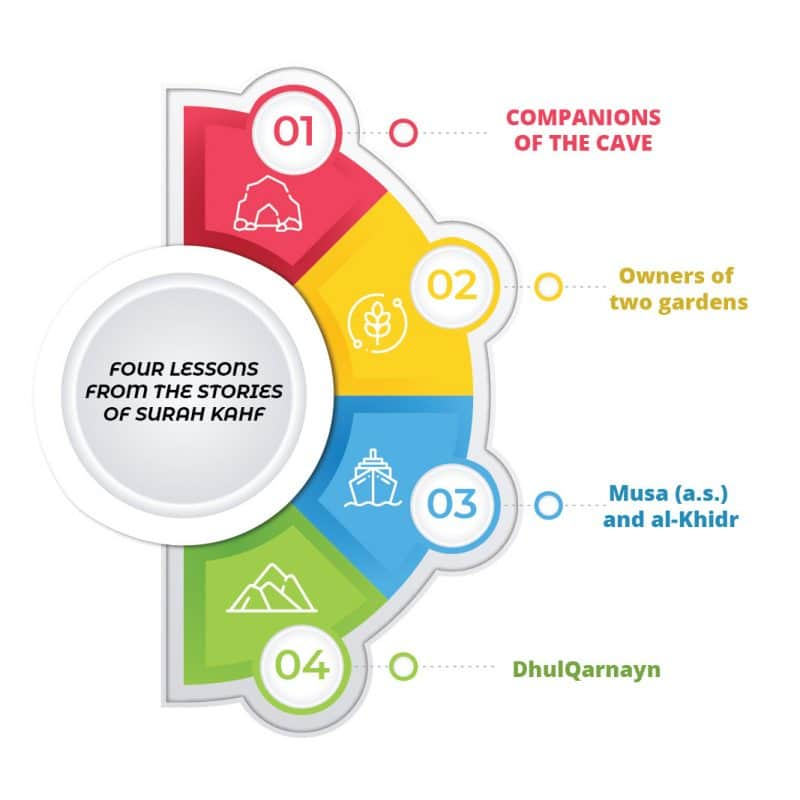

Introduction to the Muqaddimah of Tafheem-ul-Quran
The Muqaddimah (Introduction) of Tafheem-ul-Quran by Maulana Abul Ala Maududi serves as a foundational preface to his comprehensive Quranic exegesis. Maududi emphasises the Quran's role as a complete code of life — addressing spiritual, social, economic, and political aspects. He advocates for a holistic approach that integrates its teachings into daily life, and stresses contextual comprehension.
Shan-e-Nuzul & Zaman-e-Nuzul
Shan-e-Nuzul (Circumstances of Revelation)
The specific events that prompted particular verses to be revealed. Understanding these helps grasp the immediate application and underlying message.
Zaman-e-Nuzul (Time of Revelation)
The chronological context. Meccan verses focus on foundational beliefs (Tawhid, Prophethood, Afterlife). Medinan verses deal with legislation, community affairs, and social justice.
Guidelines on Reading Tafseer
1
Begin with the Quran itself — cross-reference verses; some passages elucidate others
2
Consult authentic Hadith — the sayings and practices of the Prophet ﷺ are a vital resource
3
Study Shan-e-Nuzul — understand the circumstances of each revelation
4
Refer to reputable Tafseer works — such as Tafheem-ul-Quran (Maududi), Tafsir Ibn Kathir, etc.
5
Seek guidance from scholars — clarify complex interpretations; avoid misunderstandings
6
Reflect and apply (Tadabbur) — contemplate the meanings and implement them in daily life
Surah Al-Baqarah 2:143 — Shahadat-e-Haq
وَكَذَٰلِكَ جَعَلْنَـٰكُمْ أُمَّةًۭ وَسَطًۭا لِّتَكُونُوا۟ شُهَدَآءَ عَلَى ٱلنَّاسِ وَيَكُونَ ٱلرَّسُولُ عَلَيْكُمْ شَهِيدًۭا
"And it is thus that We appointed you to be the community of the middle way so that you might be witnesses to all mankind and the Messenger might be a witness to you." Quran 2:143
The Muslim Ummah has been appointed to religious guidance and leadership of the world — a great honour and a heavy responsibility. Just as the Prophet ﷺ served as a living example, the Muslim community must demonstrate godliness, righteousness, equity, and fair play to all of humanity. If Muslims fail in conveying the guidance received through the Prophet ﷺ, they will be held accountable.
Surah Al-Asr (103) — Time & Loss
وَٱلْعَصْرِ إِنَّ ٱلْإِنسَـٰنَ لَفِى خُسْرٍ إِلَّا ٱلَّذِينَ ءَامَنُوا۟ وَعَمِلُوا۟ ٱلصَّـٰلِحَـٰتِ وَتَوَاصَوْا۟ بِٱلْحَقِّ وَتَوَاصَوْا۟ بِٱلصَّبْرِ
By Time! Lo, mankind is in a state of loss — except those who have faith, do righteous deeds, counsel each other to hold on to truth, and counsel each other to be steadfast. Surah Al-Asr 103:1–3
Imam al-Shafi'i said: "If people reflected only on this surah, it would suffice them." Despite being three verses, it contains a complete framework for human success.
إِيمَان
True heartfelt belief — in Allah
سُبْحَانَهُ وَتَعَالَىٰ, the Prophets, the Books, the Angels, the Afterlife, and Qadar. Without it, life is rudderless.
2
Amal Salih
Righteous Deedsعَمَلٌ صَالِح
Good deeds must stem from sincere faith. Faith without action is like a seed that never grows. True faith naturally leads to righteous action.
3
Tawasi bil-Haqq
Exhorting to Truthتَوَاصَوْا بِالْحَقّ
Believers must form a just society, encouraging each other to uphold truth and prevent injustice. Passive silence in the face of wrong is not acceptable.
4
Tawasi bis-Sabr
Exhorting to Patienceتَوَاصَوْا بِالصَّبْر
Supporting truth leads to hardship. Believers must encourage each other to endure with patience — collective fortitude keeps communities on the right path.
Time is like melting ice — your lifespan is slipping away. Imam Razi related the wisdom of an ice-seller who cried: "Have mercy on the one whose wealth is melting away!" Without these four qualities, we waste our limited time in loss.
Surah Al-Ma'oon (107) — Small Kindnesses
أَرَأَيْتَ الَّذِي يُكَذِّبُ بِالدِّينِ فَذَٰلِكَ الَّذِي يَدُعُّ الْيَتِيمَ وَلَا يَحُضُّ عَلَىٰ طَعَامِ الْمِسْكِينِ
"Have you seen the one who denies the Judgement? Then he is the one who repulses the orphan and does not urge feeding the poor." Surah Al-Ma'oon 107:1–3
This surah illustrates how denial of the Hereafter — or insincere belief — corrupts character. The surah then warns against hypocrites who pray only to be seen:
- Verse 1–2: Denial of Judgement Day leads to cruelty to orphans — denying their rights persistently
- Verse 3: Such a person neither feeds the poor nor urges others to — the poor have a right to be fed, not a charity
- Verse 4–5: "Woe to those who pray — those who are heedless of their prayer" — those who perform it without attention, delay it, or treat it as a burden
- Verse 6: Those who do good only to be seen — worship driven by pride, not sincerity
- Verse 7: Those who withhold ma'un — even small everyday items like a tool, some salt, or water
Summary: Disbelief in the Hereafter (or insincere belief) corrupts character: oppressing the weak, neglecting the needy, careless worship, acting for show, and lacking basic generosity. It is a call to sincere faith, heartfelt worship, and active compassion.
Surah Al-Muminun (23:1–11) — The Successful Believers
قَدْ أَفْلَحَ الْمُؤْمِنُونَ
"The believers have indeed attained success." Surah Al-Muminun 23:1
Seven qualities define the people of success — the inheritors of Al-Firdaus (the highest Paradise):
1
الَّذِينَ هُمْ فِي صَلَاتِهِمْ خَاشِعُونَ
Khushu' in PrayerThey humble themselves in their prayers — heart fears Allah, body reflects stillness and reverence.
2
وَالَّذِينَ هُمْ عَنِ اللَّغْوِ مُعْرِضُونَ
Avoid Vain ThingsThey avoid all that is frivolous — wasteful speech, indecent jokes, and time-wasting entertainment.
3
وَالَّذِينَ هُمْ لِلزَّكَاةِ فَاعِلُونَ
Give ZakahThey consistently purify their wealth, morals, and society — understanding that success is tied to fulfilling the rights of others.
4
وَالَّذِينَ هُمْ لِفُرُوجِهِمْ حَافِظُونَ
Guard ChastityThey are modest and restrict intimate relations to lawful marriage only. They seek no unlawful means.
5
وَالَّذِينَ هُمْ لِأَمَانَاتِهِمْ وَعَهْدِهِمْ رَاعُونَ
Honour Trusts & CovenantsThey fulfil all trusts — divine, societal, or personal — and keep their promises. Breaking them is a sign of hypocrisy.
6
وَالَّذِينَ هُمْ عَلَى صَلَوَاتِهِمْ يُحَافِظُونَ
Guard Their PrayersBeyond just performing salah — they are consistent with timing, requirements, and presence of heart in every prayer.
✓
أُولَٰئِكَ هُمُ الْوَارِثُونَ الَّذِينَ يَرِثُونَ الْفِرْدَوْسَ
Inheritors of Al-FirdausThey inherit the highest gardens of Paradise, abiding therein forever.
Lessons from Surah Al-Kahf

01
Companions of the Cave (Aṣḥāb al-Kahf)
Believers who fled persecution for the sake of their faith. Allah سُبْحَانَهُ وَتَعَالَىٰ caused them to sleep for many years, preserving them and awaking them when their community had changed.
Lesson: When a believer is steadfast in faith, Allah helps them in ways beyond comprehension. Stay in the company of righteous people.
A wealthy man who was given two gardens but allowed his wealth to lead him to doubt his faith. Allah سُبْحَانَهُ وَتَعَالَىٰ deprived him of both, making him realise the transient nature of this world — but too late.
Lesson: Wealth is a test. Everything worldly is temporary — be grateful and spend on those who have less.
03
Musa عليه السلام and al-Khidr عليه السلام
Musa عليه السلام believed no one had more knowledge than him. Allah سُبْحَانَهُ وَتَعَالَىٰ sent him to Khidr عليه السلام, who repeatedly demonstrated knowledge Musa عليه السلام did not possess.
Lesson: Knowledge should teach humility. There is always someone more knowledgeable — remain humble.
A righteous and powerful king who travelled across the world helping people, spreading good, and protecting communities from the menace of Gog and Magog (Ya'juj wa Ma'juj).
Lesson: Power is a gift from Allah. Those given power must use it to do good, ease the lives of others, and fight evil.
وَٱصْبِرْ نَفْسَكَ مَعَ ٱلَّذِينَ يَدْعُونَ رَبَّهُم بِٱلْغَدَوٰةِ وَٱلْعَشِىِّ يُرِيدُونَ وَجْهَهُۥ
"And keep yourself patient by being with those who call upon their Lord morning and evening, seeking His countenance." Quran 18:28